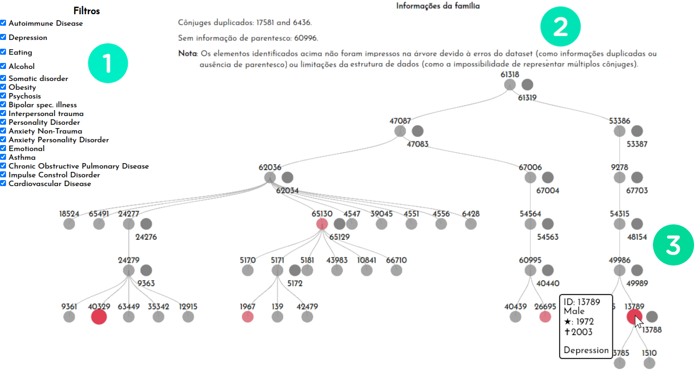

Challenge description and detailed approaches
Dados os dois datasets "Family Attributes" e "Family Structure", tarefas foram especificadas para a criação de uma ferramenta de visualização:
- (1) Para um determinado indivíduo-alvo, identifique casos semelhantes, incluindo como eles estão relacionados entre si (por exemplo, se eles co-ocorrem em uma determinada família).
- (2) Caracterizar a distribuição de atributos clínicos para casos de suicídio em famílias com altas taxas de incidência (alto número relativo de casos).
- (3) Caracterizar (ou seja, a relação entre os casos e seus atributos) casos de suicídio em famílias com alta incidência de um determinado atributo clínico (como depressão).
- (4) Compare as informações clínicas para casos de suicídio com seus parentes imediatos (irmãos, pais e filhos).
Abaixo são descritas as estratégias utilizadas para resolver estas tarefas.
Family Trees
Árvores genealógicas são muito úteis para visualizar a estrutura geral de uma família e também explorar individualmente seus integrantes. Famílias quando analisadas somente em um contexto geral podem ocultar informações importantes para auxiliar profissionais em diagnósticos médicos. Tendo em vista estes benefícios, foi proposta uma visualização em árvore para cada família, contando com as seguintes características:
- Filtragem de atributos clínicos específicos, onde os nodos filtrados são incrementados em opacidade e diâmetro do círculo.
- Interatividade, apresentando características e atributos individuais ao deslizar com o mouse sobre os nodos.

A figura acima apresenta a visão geral da ferramenta para a "família nove", onde em (1) é possível selecionar os filtros para os atributos clínicos, de forma que caso a pessoa contenha ao menos um destes atributos será então destacada na árvore. Em (2) é apresentada uma breve descrição técnica da família, indicando erros do dataset ou relatando demais indivíduos não apresentados na árvore (como a presença múltiplos cônjuges, limitada pela visualização). Por fim, em (3) é apresentada a árvore genealógica e um exemplo de interatividade com o mouse que descreve as características de uma pessoa com depressão desta família (ID 13789).
Com a utilização das árvores genealógicas é possível identificar rapidamente casos semelhantes em uma família, e ainda deixar a critério do usuário a escolha do grau de parentesco analisado (irmão, pai, avô, tios, etc.). Esta estratégia foi desenvolvida visando as tarefas (1) e (4) apresentadas acima. A ferramenta encontra-se disponível na página Family Trees.